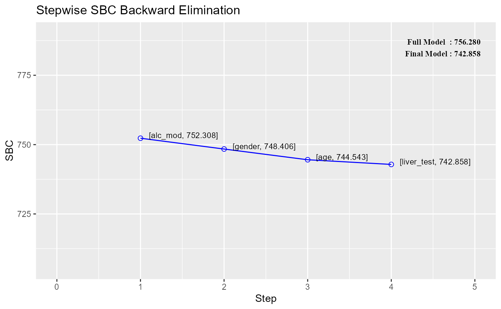

Stepwise SBC backward regression
Source:R/ols-stepaic-backward-regression.R
ols_step_backward_sbc.RdBuild regression model from a set of candidate predictor variables by removing predictors based on schwarz bayesian criterion, in a stepwise manner until there is no variable left to remove any more.
Usage
ols_step_backward_sbc(model, ...)
# S3 method for default
ols_step_backward_sbc(
model,
include = NULL,
exclude = NULL,
progress = FALSE,
details = FALSE,
...
)
# S3 method for ols_step_backward_sbc
plot(x, print_plot = TRUE, details = TRUE, digits = 3, ...)Arguments
- model
An object of class
lm; the model should include all candidate predictor variables.- ...
Other arguments.
- include
Character or numeric vector; variables to be included in selection process.
- exclude
Character or numeric vector; variables to be excluded from selection process.
- progress
Logical; if
TRUE, will display variable selection progress.- details
Logical; if
TRUE, will print the regression result at each step.- x
An object of class
ols_step_backward_*.- print_plot
logical; if
TRUE, prints the plot else returns a plot object.- digits
Number of decimal places to display.
Value
List containing the following components:
- model
final model; an object of class
lm- metrics
selection metrics
- others
list; info used for plotting and printing
References
Venables, W. N. and Ripley, B. D. (2002) Modern Applied Statistics with S. Fourth edition. Springer.
See also
Other backward selection procedures:
ols_step_backward_adj_r2(),
ols_step_backward_aic(),
ols_step_backward_p(),
ols_step_backward_r2(),
ols_step_backward_sbic()
Examples
# stepwise backward regression
model <- lm(y ~ ., data = surgical)
ols_step_backward_sbc(model)
#>
#>
#> Stepwise Summary
#> -------------------------------------------------------------------------
#> Step Variable AIC SBC SBIC R2 Adj. R2
#> -------------------------------------------------------------------------
#> 0 Full Model 736.390 756.280 586.665 0.78184 0.74305
#> 1 alc_mod 734.407 752.308 583.884 0.78177 0.74856
#> 2 gender 732.494 748.406 581.290 0.78142 0.75351
#> 3 age 730.620 744.543 578.844 0.78091 0.75808
#> 4 liver_test 730.924 742.858 578.678 0.77136 0.75269
#> -------------------------------------------------------------------------
#>
#> Final Model Output
#> ------------------
#>
#> Model Summary
#> -------------------------------------------------------------------
#> R 0.878 RMSE 188.249
#> R-Squared 0.771 MSE 39053.801
#> Adj. R-Squared 0.753 Coef. Var 28.147
#> Pred R-Squared 0.695 AIC 730.924
#> MAE 140.619 SBC 742.858
#> -------------------------------------------------------------------
#> RMSE: Root Mean Square Error
#> MSE: Mean Square Error
#> MAE: Mean Absolute Error
#> AIC: Akaike Information Criteria
#> SBC: Schwarz Bayesian Criteria
#>
#> ANOVA
#> -----------------------------------------------------------------------
#> Sum of
#> Squares DF Mean Square F Sig.
#> -----------------------------------------------------------------------
#> Regression 6455884.265 4 1613971.066 41.327 0.0000
#> Residual 1913636.272 49 39053.801
#> Total 8369520.537 53
#> -----------------------------------------------------------------------
#>
#> Parameter Estimates
#> ------------------------------------------------------------------------------------------------
#> model Beta Std. Error Std. Beta t Sig lower upper
#> ------------------------------------------------------------------------------------------------
#> (Intercept) -1334.424 180.589 -7.389 0.000 -1697.332 -971.516
#> bcs 81.439 17.781 0.329 4.580 0.000 45.706 117.171
#> pindex 10.131 1.622 0.431 6.246 0.000 6.871 13.390
#> enzyme_test 11.243 1.308 0.601 8.596 0.000 8.614 13.871
#> alc_heavy 312.777 72.341 0.309 4.324 0.000 167.402 458.152
#> ------------------------------------------------------------------------------------------------
#>
# stepwise backward regression plot
model <- lm(y ~ ., data = surgical)
k <- ols_step_backward_sbc(model)
plot(k)

# selection metrics
k$metrics
#> step variable r2 adj_r2 aic sbc sbic
#> 1 1 alc_mod 0.7817703 0.7485615 734.4068 752.3077 583.8836
#> 2 2 gender 0.7814169 0.7535127 732.4942 748.4061 581.2896
#> 3 3 age 0.7809054 0.7580831 730.6204 744.5433 578.8438
#> 4 4 liver_test 0.7713565 0.7526917 730.9241 742.8580 578.6783
# final model
k$model
#>
#> Call:
#> lm(formula = paste(response, "~", paste(preds, collapse = " + ")),
#> data = l)
#>
#> Coefficients:
#> (Intercept) bcs pindex enzyme_test alc_heavy
#> -1334.42 81.44 10.13 11.24 312.78
#>
# include or exclude variable
# force variables to be included in the selection process
ols_step_backward_sbc(model, include = c("alc_mod", "gender"))
#>
#>
#> Stepwise Summary
#> -------------------------------------------------------------------------
#> Step Variable AIC SBC SBIC R2 Adj. R2
#> -------------------------------------------------------------------------
#> 0 Full Model 736.390 756.280 586.665 0.78184 0.74305
#> 1 age 734.544 752.445 584.021 0.78121 0.74792
#> 2 liver_test 734.502 750.413 583.297 0.77314 0.74418
#> -------------------------------------------------------------------------
#>
#> Final Model Output
#> ------------------
#>
#> Model Summary
#> -------------------------------------------------------------------
#> R 0.879 RMSE 187.514
#> R-Squared 0.773 MSE 40398.325
#> Adj. R-Squared 0.744 Coef. Var 28.628
#> Pred R-Squared 0.672 AIC 734.502
#> MAE 138.127 SBC 750.413
#> -------------------------------------------------------------------
#> RMSE: Root Mean Square Error
#> MSE: Mean Square Error
#> MAE: Mean Absolute Error
#> AIC: Akaike Information Criteria
#> SBC: Schwarz Bayesian Criteria
#>
#> ANOVA
#> -----------------------------------------------------------------------
#> Sum of
#> Squares DF Mean Square F Sig.
#> -----------------------------------------------------------------------
#> Regression 6470799.239 6 1078466.540 26.696 0.0000
#> Residual 1898721.298 47 40398.325
#> Total 8369520.537 53
#> -----------------------------------------------------------------------
#>
#> Parameter Estimates
#> ------------------------------------------------------------------------------------------------
#> model Beta Std. Error Std. Beta t Sig lower upper
#> ------------------------------------------------------------------------------------------------
#> (Intercept) -1332.543 187.069 -7.123 0.000 -1708.878 -956.208
#> bcs 80.623 18.135 0.325 4.446 0.000 44.140 117.105
#> pindex 10.000 1.668 0.425 5.995 0.000 6.644 13.355
#> enzyme_test 11.116 1.349 0.595 8.243 0.000 8.403 13.829
#> gender 33.509 56.149 0.042 0.597 0.554 -79.448 146.465
#> alc_mod 7.110 64.258 0.009 0.111 0.912 -122.161 136.381
#> alc_heavy 321.131 84.770 0.317 3.788 0.000 150.596 491.666
#> ------------------------------------------------------------------------------------------------
#>
# use index of variable instead of name
ols_step_backward_sbc(model, include = c(7, 6))
#>
#>
#> Stepwise Summary
#> -------------------------------------------------------------------------
#> Step Variable AIC SBC SBIC R2 Adj. R2
#> -------------------------------------------------------------------------
#> 0 Full Model 736.390 756.280 586.665 0.78184 0.74305
#> 1 age 734.544 752.445 584.021 0.78121 0.74792
#> 2 liver_test 734.502 750.413 583.297 0.77314 0.74418
#> -------------------------------------------------------------------------
#>
#> Final Model Output
#> ------------------
#>
#> Model Summary
#> -------------------------------------------------------------------
#> R 0.879 RMSE 187.514
#> R-Squared 0.773 MSE 40398.325
#> Adj. R-Squared 0.744 Coef. Var 28.628
#> Pred R-Squared 0.672 AIC 734.502
#> MAE 138.127 SBC 750.413
#> -------------------------------------------------------------------
#> RMSE: Root Mean Square Error
#> MSE: Mean Square Error
#> MAE: Mean Absolute Error
#> AIC: Akaike Information Criteria
#> SBC: Schwarz Bayesian Criteria
#>
#> ANOVA
#> -----------------------------------------------------------------------
#> Sum of
#> Squares DF Mean Square F Sig.
#> -----------------------------------------------------------------------
#> Regression 6470799.239 6 1078466.540 26.696 0.0000
#> Residual 1898721.298 47 40398.325
#> Total 8369520.537 53
#> -----------------------------------------------------------------------
#>
#> Parameter Estimates
#> ------------------------------------------------------------------------------------------------
#> model Beta Std. Error Std. Beta t Sig lower upper
#> ------------------------------------------------------------------------------------------------
#> (Intercept) -1332.543 187.069 -7.123 0.000 -1708.878 -956.208
#> bcs 80.623 18.135 0.325 4.446 0.000 44.140 117.105
#> pindex 10.000 1.668 0.425 5.995 0.000 6.644 13.355
#> enzyme_test 11.116 1.349 0.595 8.243 0.000 8.403 13.829
#> gender 33.509 56.149 0.042 0.597 0.554 -79.448 146.465
#> alc_mod 7.110 64.258 0.009 0.111 0.912 -122.161 136.381
#> alc_heavy 321.131 84.770 0.317 3.788 0.000 150.596 491.666
#> ------------------------------------------------------------------------------------------------
#>
# force variable to be excluded from selection process
ols_step_backward_sbc(model, exclude = c("alc_heavy", "bcs"))
#> [1] "No variables have been removed from the model."
# use index of variable instead of name
ols_step_backward_sbc(model, exclude = c(8, 1))
#> [1] "No variables have been removed from the model."